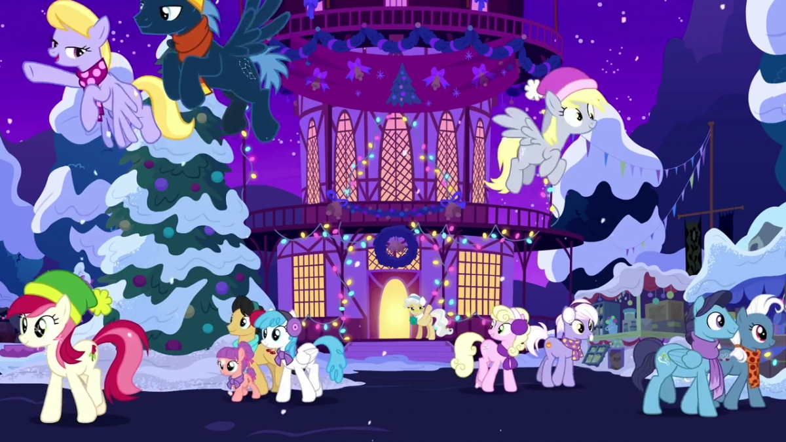
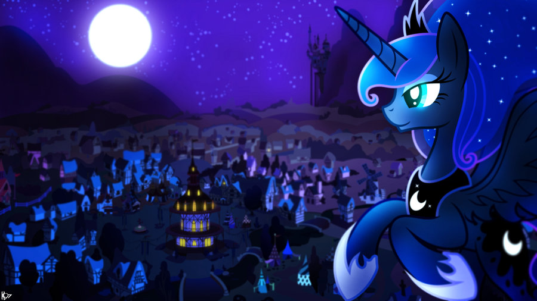
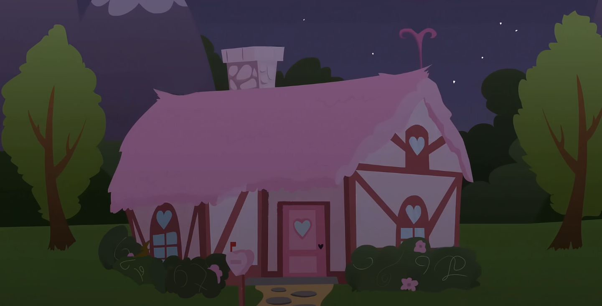

Введите ключевое слово:
Завтра в Понивиле обещают выпадение снега, а также температуру ниже -15°C.
Многие готовятся встречать первый день зимы.
Пони и жители Эквестрии готовятся к жутким холодам зимним праздникам!
Вся Эквестрийская элита и принцессы Луна и Селестия,
обещают присутствовать на мероприятии.


Сегодня, все жители Понивиля проснулись с жуткой головной болью,
принцесса Доброты - Твайлайт Спаркл сказала,
что из-за сильного излучения магии,
все были подвержены ее воздействию.
Принцесса Луна заявила,
что сны жителей не искажались во время ее дежурства.
На окраине Понивиля замечен странный дом,
которого ранее не существовало.
При попытке приблизиться к нему,
пони разворачивались обратно
и не понимали почему.
Также в городе замечали странное существо,
напоминающее пони.
